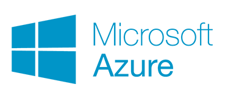

Platform Features and Specifications

Microsoft Visual Studio Community
A free, fully-featured, and extensible IDE for creating modern applications for Windows, Android, and iOS, as well as web applications and cloud services.
- Flexibility
Build apps for any platform
- Productivity
Designers, editors, debuggers, profilers, in one single tool
- Ecosystem
Access to thousands of extensions
- Languages
Code in C#, Visual Basic, F#, C++, HTML, JavaScript, TypeScript, Python, and more

Microsoft SQL Server Enterprise
Build intelligent, mission-critical applications using a scalable, hybrid database platform that has everything built in — from in-memory performance and advanced
security to in-database analytics.
- Industry leading
Build mission-critical, intelligent apps for online transaction processing (OLTP) with breakthrough scalability, performance, and availability.
- Advanced security
Protect data at rest and in motion. SQL Server is the least vulnerable database for six years running in the NIST vulnerabilities database.
- End-to-end mobile BI
Transform data into actionable insights. Deliver insights on any device—online or offline—at one-fifth the cost of other self-service solutions.
- In-database advanced analytics
Analyze data directly within the SQL Server database—without moving the data—using R, the popular statistics language.
- Made for hybrid cloud
Get a consistent platform and tooling for easier workload mobility between your datacenter, private cloud, or Microsoft Azure.
Microsoft Cognitive Toolkit
The Microsoft Cognitive Toolkit empowers you to harness the intelligence within massive datasets through deep learning by providing uncompromised
scaling, speed, and accuracy with commercial-grade quality and compatibility with the programming languages and algorithms you already use.
-
Speed & Scalability
The Microsoft Cognitive Toolkit trains and evaluates deep learning algorithms faster than other available toolkits, scaling efficiently in a range of
environments—from a CPU, to GPUs, to multiple machines—while maintaining accuracy.
- Commercial-Grade Quality
The Microsoft Cognitive Toolkit is built with sophisticated algorithms and production
readers to work reliably with massive datasets. Skype, Cortana, Bing, Xbox, and industry-leading data scientists already use the
Microsoft Cognitive Toolkit to develop commercial-grade AI.
- Compatibility
The Microsoft Cognitive Toolkit offers the most expressive, easy-to-use architecture available. Working with the languages and networks you know,
like C++ and Python, it empowers you to customize any of the built-in training algorithms, or use your own.

Microsoft Azure for Students
Deploy anywhere with your choice of tools. Choose how you deploy Azure—connecting cloud and on-premises with consistent hybrid cloud capabilities and using
open source technologies—for maximum portability and value from your existing investments.
- Build your apps, your way
Use the tools and open source technologies you already know and trust, because Azure supports a broad selection of operating systems, programming
languages, frameworks, databases, and devices.
- Connect on-premises data and apps
Azure offers hybrid consistency everywhere: in application development, management and security, identity management, and across the data platform.
- Extend the cloud on-premises
Extend Azure to your datacenter with Azure Stack, and build innovative hybrid apps across the cloud and on-premises. Use the same APIs,
DevOps tools, portal, and Marketplace content.